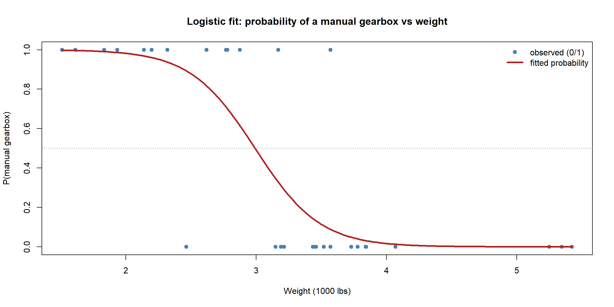

Our first GLM tackles the most common non-normal response of all: a binary outcome — success/failure, yes/no, \(1/0\). The model is logistic regression, the Binomial-distribution, logit-link member of the GLM family from the previous page. We will fit one, read its coefficients as odds, turn it into predicted probabilities, and use it to classify.
The model
For a binary response \(Y_i \in \{0,1\}\), the only thing to model is the probability of a success, \(p_i = P(Y_i = 1)\). We attach it to a linear predictor through the logit link: \[
\underbrace{\log\!\frac{p_i}{1-p_i}}_{\text{log-odds of success}} = \beta_0 + \beta_1 x_{i1} + \dots + \beta_p x_{ip}.
\] Inverting the link gives the probability itself, guaranteed to land in \([0,1]\): \[
p_i = \frac{1}{1 + e^{-(\beta_0 + \beta_1 x_{i1} + \dots)}}.
\] That second formula is the famous S-shaped (sigmoid) curve: as the linear predictor sweeps from \(-\infty\) to \(+\infty\), the probability rises smoothly from 0 to 1, never escaping the interval.
NoteIn a nutshell: odds and log-odds
The odds of an event are \(\dfrac{p}{1-p}\) — the chance it happens divided by the chance it doesn’t. A probability of \(0.8\) is odds of \(0.8/0.2 = 4\) (“4 to 1 on”). The log-odds (or logit) is just \(\log\) of that. We model the log-odds because, unlike a probability, it can be any real number — exactly what a linear predictor needs.
Fitting a logistic regression
We use R’s built-in mtcars and ask: from a car’s weight, can we predict whether it has a manual gearbox (am = 1) rather than an automatic (am = 0)? Fitting is one call to glm() with family = binomial — note how closely it mirrors lm().
Code
```{r}#| warning: false#| message: falsemodel <-glm(am ~ wt, data = mtcars, family = binomial)summary(model)```
Call:
glm(formula = am ~ wt, family = binomial, data = mtcars)
Coefficients:
Estimate Std. Error z value Pr(>|z|)
(Intercept) 12.040 4.510 2.670 0.00759 **
wt -4.024 1.436 -2.801 0.00509 **
---
Signif. codes: 0 '***' 0.001 '**' 0.01 '*' 0.05 '.' 0.1 ' ' 1
(Dispersion parameter for binomial family taken to be 1)
Null deviance: 43.230 on 31 degrees of freedom
Residual deviance: 19.176 on 30 degrees of freedom
AIC: 23.176
Number of Fisher Scoring iterations: 6
Read the summary exactly as you would a linear model’s, with one crucial difference: the coefficients are on the log-odds scale. The wt coefficient is negative and significant — heavier cars have lower log-odds of being manual, which matches intuition (manual cars in this data, like the Lotus and Honda, tend to be light).
Interpreting the coefficients: odds ratios
A coefficient of \(\beta_1\) says “a one-unit increase in \(x_1\) adds \(\beta_1\) to the log-odds” — true, but hard to feel. Exponentiating turns it into something concrete: \(e^{\beta_1}\) is the odds ratio, the factor by which the odds of success are multiplied for each one-unit increase in the predictor.
Code
```{r}# Coefficients on the odds scale, with 95% confidence intervalsexp(cbind(OddsRatio =coef(model), confint(model)))```
The odds ratio for wt is well below 1: each extra 1000 lb of weight multiplies the odds of a manual gearbox by that factor — i.e. sharply reduces them. An odds ratio of 1 would mean “no effect”; above 1 means the predictor raises the odds, below 1 means it lowers them.
NoteIn a nutshell: reading an odds ratio
Odds ratio \(= 1\) → the predictor makes no difference.
Odds ratio \(= 2\) → each unit doubles the odds of success.
Odds ratio \(= 0.5\) → each unit halves the odds.
It is a multiplicative effect on the odds, not an additive effect on the probability — which is why the same coefficient changes the probability a lot in the middle of the S-curve and barely at all near 0 or 1.
Predicted probabilities and the S-curve
To get back to plain probabilities, predict with type = "response" (which applies the inverse link for you). Plotting these against weight reveals the characteristic sigmoid.
Code
```{r}#| fig-align: center# A smooth grid of weights, and the model's predicted P(manual)wtGrid <-data.frame(wt =seq(min(mtcars$wt), max(mtcars$wt), length.out =200))wtGrid$pHat <-predict(model, newdata = wtGrid, type ="response")plot(mtcars$wt, mtcars$am, pch =19, col ="steelblue",xlab ="Weight (1000 lbs)", ylab ="P(manual gearbox)",main ="Logistic fit: probability of a manual gearbox vs weight")lines(wtGrid$wt, wtGrid$pHat, lwd =3, col ="firebrick")abline(h =0.5, col ="grey50", lty =3)legend("topright", bty ="n", lwd =c(NA, 3), pch =c(19, NA),col =c("steelblue", "firebrick"),legend =c("observed (0/1)", "fitted probability"))```

The fitted curve glides from near 1 for light cars down to near 0 for heavy ones, passing through \(0.5\) around the weight where manual and automatic become equally likely — and, unlike a straight line, it never strays outside \([0,1]\).
More than one predictor
Nothing changes with extra predictors — we just add them to the linear predictor, exactly as in multiple linear regression. Let us add horsepower.
Code
```{r}model2 <-glm(am ~ wt + hp, data = mtcars, family = binomial)round(exp(coef(model2)), 4) # odds ratios for each predictor```
(Intercept) wt hp
1.561455e+08 3.000000e-04 1.036900e+00
Each odds ratio is now interpreted holding the other predictor fixed — the same “all else equal” reading as in linear regression, but multiplicative on the odds.
From probabilities to a classification
A logistic model outputs probabilities; to make a decision we pick a threshold (commonly \(0.5\)) and predict “success” above it. Comparing predictions to the truth gives a confusion matrix.
Code
```{r}pHat <-predict(model2, type ="response")predicted <-ifelse(pHat >0.5, 1, 0)table(predicted = predicted, actual = mtcars$am)```
actual
predicted 0 1
0 18 1
1 1 12
The diagonal entries are correct classifications, the off-diagonal ones are errors. The \(0.5\) cut-off is a choice, not a law: raising it makes the model more cautious about declaring a success (fewer false positives, more false negatives), and the right trade-off depends on the costs of each kind of mistake.
TipGoing further 🚀
A single threshold hides how the model performs across all cut-offs. The ROC curve plots the true-positive against the false-positive rate as the threshold varies, and the area under it (AUC) summarises overall discrimination in one number:
For binary responses recorded as proportions (e.g. 8 successes out of 10 trials per row), fit with glm(cbind(successes, failures) ~ ..., family = binomial). And when the outcome has more than two categories, the natural extensions are nnet::multinom() (unordered) and MASS::polr() (ordered) — same linear-predictor idea, more than one logit.
Summary
Idea
Logistic regression
Response
Binary \(0/1\) (or a proportion)
Distribution / link
Binomial / logit
Model
\(\log\frac{p}{1-p} = X\beta\), so \(p = 1/(1+e^{-X\beta})\)
Coefficient \(\beta_j\)
Additive effect on the log-odds
\(e^{\beta_j}\)
Odds ratio — multiplicative effect on the odds
glm(y ~ x, family = binomial)
Fits it by maximum likelihood
predict(..., type = "response")
Returns probabilities; threshold to classify
Logistic regression is the GLM template with a Binomial response and a logit link — the linear predictor unchanged, the link doing the work of keeping every prediction a genuine probability. Next we swap the distribution again, for counts.
Source Code
---title: "Logistic Regression (Binary Data)"format: html: fig-width: 12 fig-height: 6 code-fold: show code-tools: true code-block-bg: true code-block-border-left: "#31BAE9" toc: true code-copy: true number_sections: true echo: fenced mathjax: trueengine: knitr---Our first GLM tackles the most common non-normal response of all: a **binary** outcome — success/failure, yes/no, $1/0$. The model is **logistic regression**, the Binomial-distribution, logit-link member of the GLM family from the previous page. We will fit one, read its coefficients as **odds**, turn it into predicted probabilities, and use it to **classify**.# The modelFor a binary response $Y_i \in \{0,1\}$, the only thing to model is the probability of a success, $p_i = P(Y_i = 1)$. We attach it to a linear predictor through the **logit** link:$$\underbrace{\log\!\frac{p_i}{1-p_i}}_{\text{log-odds of success}} = \beta_0 + \beta_1 x_{i1} + \dots + \beta_p x_{ip}.$$Inverting the link gives the probability itself, guaranteed to land in $[0,1]$:$$p_i = \frac{1}{1 + e^{-(\beta_0 + \beta_1 x_{i1} + \dots)}}.$$That second formula is the famous **S-shaped (sigmoid) curve**: as the linear predictor sweeps from $-\infty$ to $+\infty$, the probability rises smoothly from 0 to 1, never escaping the interval.::: {.callout-note title="In a nutshell: odds and log-odds"}The **odds** of an event are $\dfrac{p}{1-p}$ — the chance it happens divided by the chance it doesn't. A probability of $0.8$ is odds of $0.8/0.2 = 4$ ("4 to 1 on"). The **log-odds** (or *logit*) is just $\log$ of that. We model the log-odds because, unlike a probability, it can be any real number — exactly what a linear predictor needs.:::# Fitting a logistic regressionWe use R's built-in `mtcars` and ask: from a car's **weight**, can we predict whether it has a **manual** gearbox (`am = 1`) rather than an automatic (`am = 0`)? Fitting is one call to `glm()` with `family = binomial` — note how closely it mirrors `lm()`.```{r}#| warning: false#| message: falsemodel <-glm(am ~ wt, data = mtcars, family = binomial)summary(model)```Read the `summary` exactly as you would a linear model's, with **one crucial difference: the coefficients are on the log-odds scale.** The `wt` coefficient is negative and significant — heavier cars have *lower* log-odds of being manual, which matches intuition (manual cars in this data, like the Lotus and Honda, tend to be light).# Interpreting the coefficients: odds ratiosA coefficient of $\beta_1$ says "a one-unit increase in $x_1$ adds $\beta_1$ to the **log-odds**" — true, but hard to feel. Exponentiating turns it into something concrete: $e^{\beta_1}$ is the **odds ratio**, the factor by which the odds of success are multiplied for each one-unit increase in the predictor.```{r}# Coefficients on the odds scale, with 95% confidence intervalsexp(cbind(OddsRatio =coef(model), confint(model)))```The odds ratio for `wt` is well below 1: each extra 1000 lb of weight **multiplies** the odds of a manual gearbox by that factor — i.e. sharply reduces them. An odds ratio of 1 would mean "no effect"; above 1 means the predictor raises the odds, below 1 means it lowers them.::: {.callout-note title="In a nutshell: reading an odds ratio"}- Odds ratio $= 1$ → the predictor makes no difference.- Odds ratio $= 2$ → each unit *doubles* the odds of success.- Odds ratio $= 0.5$ → each unit *halves* the odds.It is a **multiplicative** effect on the odds, not an additive effect on the probability — which is why the same coefficient changes the probability a lot in the middle of the S-curve and barely at all near 0 or 1.:::# Predicted probabilities and the S-curveTo get back to plain probabilities, predict with `type = "response"` (which applies the inverse link for you). Plotting these against weight reveals the characteristic sigmoid.```{r}#| fig-align: center# A smooth grid of weights, and the model's predicted P(manual)wtGrid <-data.frame(wt =seq(min(mtcars$wt), max(mtcars$wt), length.out =200))wtGrid$pHat <-predict(model, newdata = wtGrid, type ="response")plot(mtcars$wt, mtcars$am, pch =19, col ="steelblue",xlab ="Weight (1000 lbs)", ylab ="P(manual gearbox)",main ="Logistic fit: probability of a manual gearbox vs weight")lines(wtGrid$wt, wtGrid$pHat, lwd =3, col ="firebrick")abline(h =0.5, col ="grey50", lty =3)legend("topright", bty ="n", lwd =c(NA, 3), pch =c(19, NA),col =c("steelblue", "firebrick"),legend =c("observed (0/1)", "fitted probability"))```The fitted curve glides from near 1 for light cars down to near 0 for heavy ones, passing through $0.5$ around the weight where manual and automatic become equally likely — and, unlike a straight line, it never strays outside $[0,1]$.# More than one predictorNothing changes with extra predictors — we just add them to the linear predictor, exactly as in multiple linear regression. Let us add horsepower.```{r}model2 <-glm(am ~ wt + hp, data = mtcars, family = binomial)round(exp(coef(model2)), 4) # odds ratios for each predictor```Each odds ratio is now interpreted **holding the other predictor fixed** — the same "all else equal" reading as in linear regression, but multiplicative on the odds.# From probabilities to a classificationA logistic model outputs probabilities; to make a **decision** we pick a threshold (commonly $0.5$) and predict "success" above it. Comparing predictions to the truth gives a **confusion matrix**.```{r}pHat <-predict(model2, type ="response")predicted <-ifelse(pHat >0.5, 1, 0)table(predicted = predicted, actual = mtcars$am)```The diagonal entries are correct classifications, the off-diagonal ones are errors. The $0.5$ cut-off is a *choice*, not a law: raising it makes the model more cautious about declaring a success (fewer false positives, more false negatives), and the right trade-off depends on the costs of each kind of mistake.::: {.callout-tip title="Going further 🚀"}A single threshold hides how the model performs across *all* cut-offs. The **ROC curve** plots the true-positive against the false-positive rate as the threshold varies, and the **area under it (AUC)** summarises overall discrimination in one number:```{r}#| eval: falselibrary(pROC)roc(mtcars$am, pHat) |>auc() # 0.5 = random, 1 = perfect```For binary responses recorded as *proportions* (e.g. 8 successes out of 10 trials per row), fit with `glm(cbind(successes, failures) ~ ..., family = binomial)`. And when the outcome has **more than two categories**, the natural extensions are `nnet::multinom()` (unordered) and `MASS::polr()` (ordered) — same linear-predictor idea, more than one logit.:::# Summary| Idea | Logistic regression ||---|---|| Response | Binary $0/1$ (or a proportion) || Distribution / link | Binomial / logit || Model | $\log\frac{p}{1-p} = X\beta$, so $p = 1/(1+e^{-X\beta})$ || Coefficient $\beta_j$ | Additive effect on the **log-odds** || $e^{\beta_j}$ | **Odds ratio** — multiplicative effect on the odds ||`glm(y ~ x, family = binomial)`| Fits it by maximum likelihood ||`predict(..., type = "response")`| Returns probabilities; threshold to classify |Logistic regression is the GLM template with a Binomial response and a logit link — the linear predictor unchanged, the link doing the work of keeping every prediction a genuine probability. Next we swap the distribution again, for **counts**.